Használati útmutató
- 1. Lehetőség - Virtuális gép használata (Ajánlott)
- I. Hyper-V
- Válassza az “Új” (New) lehetőséget, ezen belül a virtuális gépet. 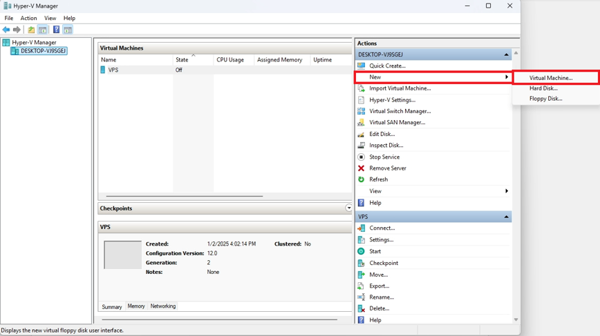
- Válasszon egy tetszőleges nevet, majd nyomjon a “Következő”-re. 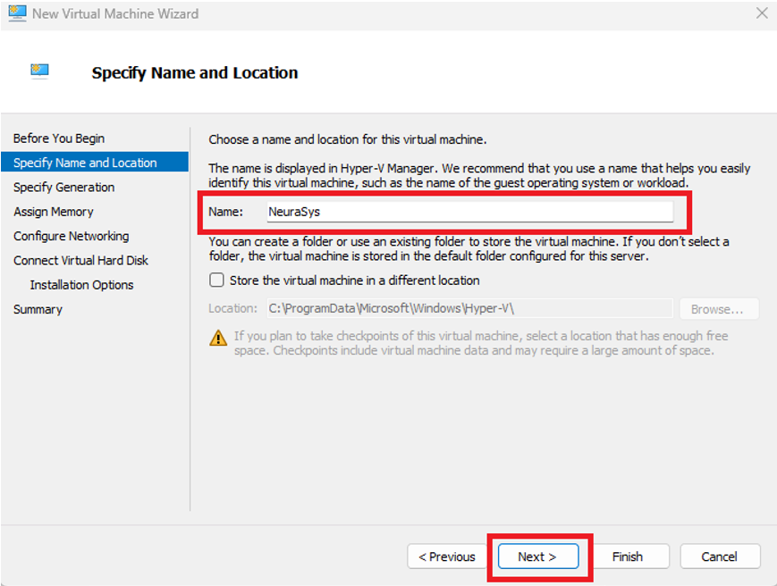
- Válassza a 2. Generációs virutális gépet és nyomjon a “Következő”-re. 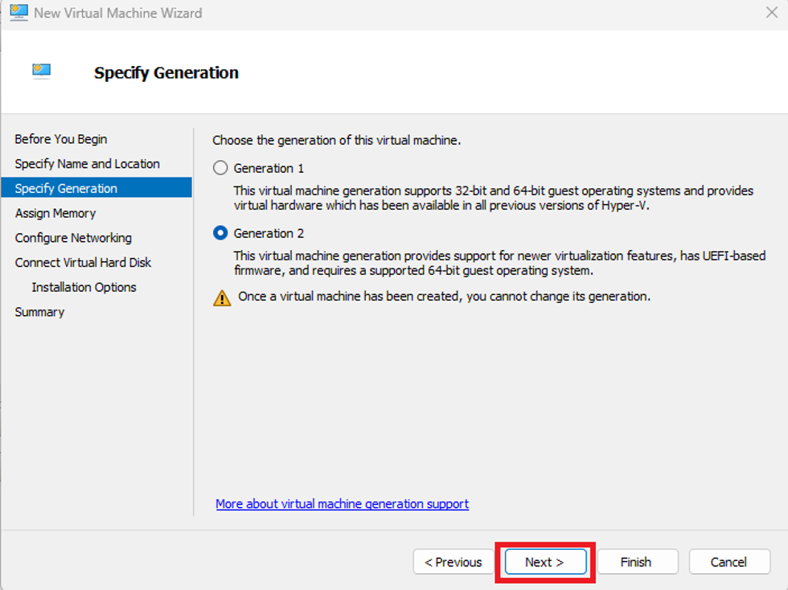
- Adjon legalább 2048 MB-nyi memóriát a gépnek. (Opcionálisan bepipálhatja a “Dinamikus memóriahasználat” menüpontot.) Ezután nyomjon a “Következőre”. 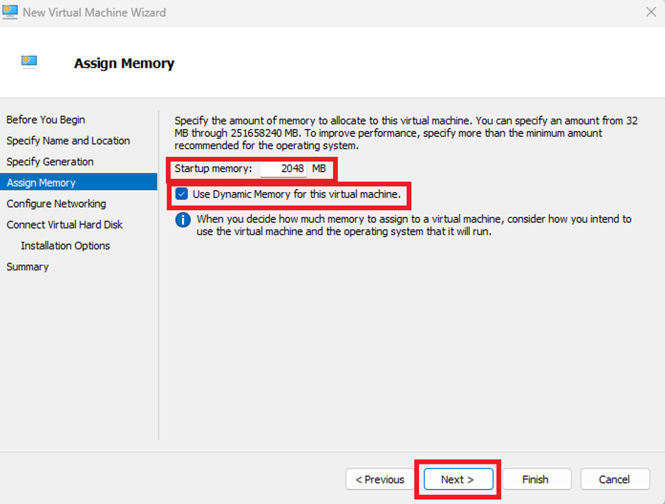
- Az internetbeállítás opcionális, nem befolyásol semmit. Ha beállította az Önnek megfelelő opciót, nyomjon a “Következő”-re. 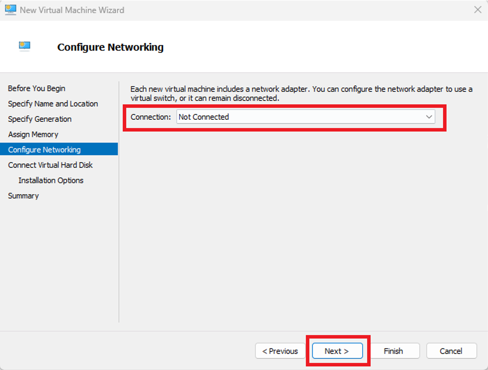
- Adjon legalább 25 GB-nyi tárhelyet a gépnek, majd nyomjon a “Következő”-re. 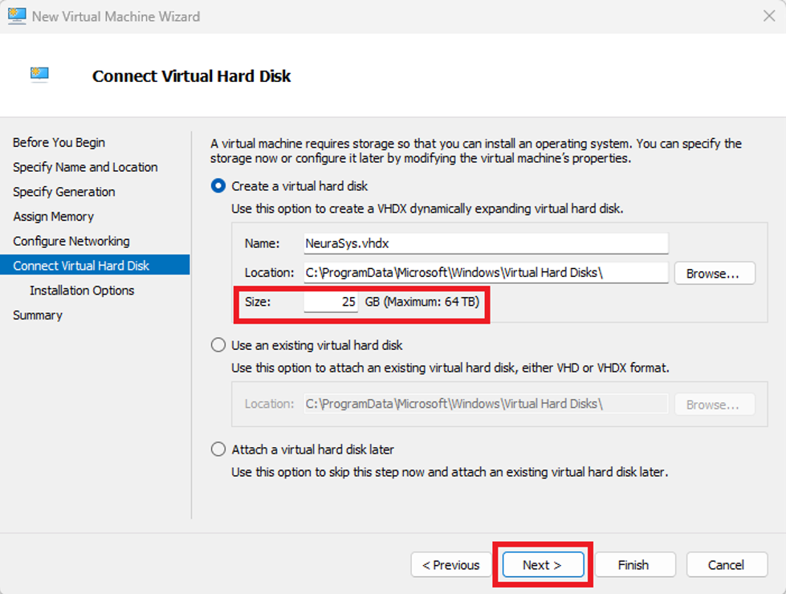
- Válassza ki az “Operációs rendszer telepítése egy boot-olható CD/DVD-ROM-ból” opciót, majd válassza ki a letöltött ISO fájlt. Ezután nyomjon a “Befejezés”-re. 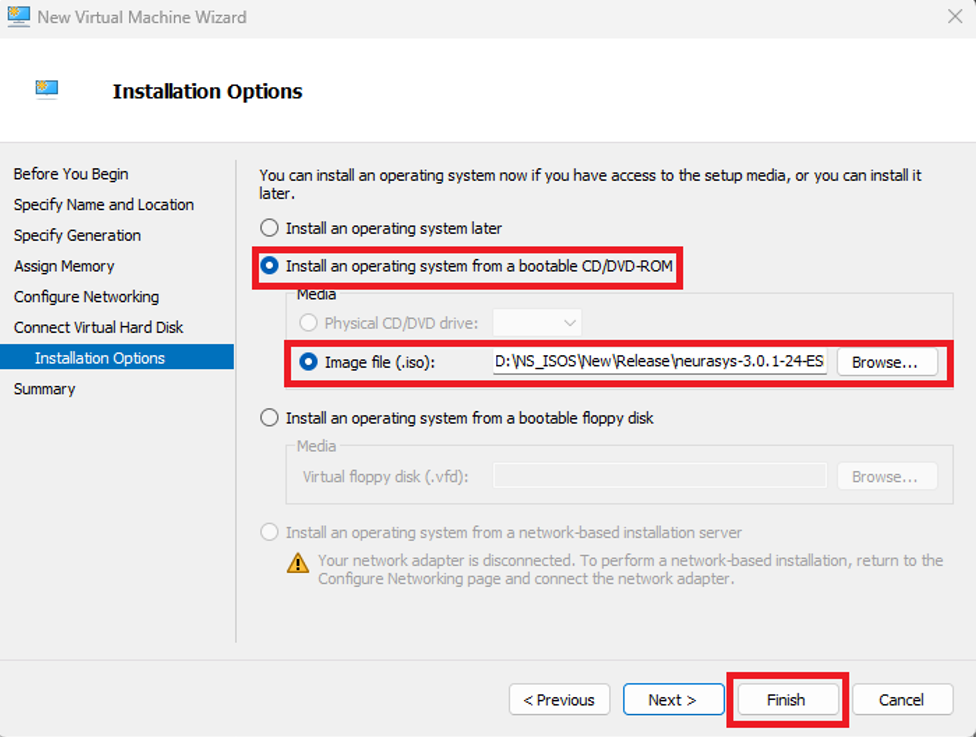
- Ezután – jobb egér gombbal – kattintson a létrehozott virtuális gépre, és nyomjon az “Indítás”-ra, majd a “Csatlakozás”-ra. 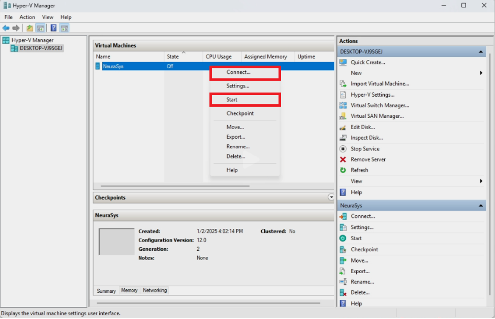
- II. Oracle Virtualbox
- Válassza az “Új” opciót a felső menüsorban. 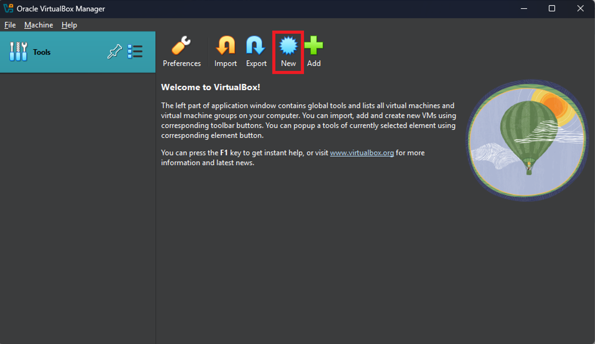
- Adjon meg egy tetszőleges nevet a gépnek, válassza ki a letöltött ISO fájlt, válassza ki a “Microsoft Windows”-t, verziónak válassza a “Windows 10”-et, és végül pipálja be a “Felügyelet nélküli telepítés kihagyása” menüpontot. Ha ez megvan, nyomjon a “Befejezés” menüpontra.
- Indítsa el a virtuális gépet az “Indítás” gombra kattintva. 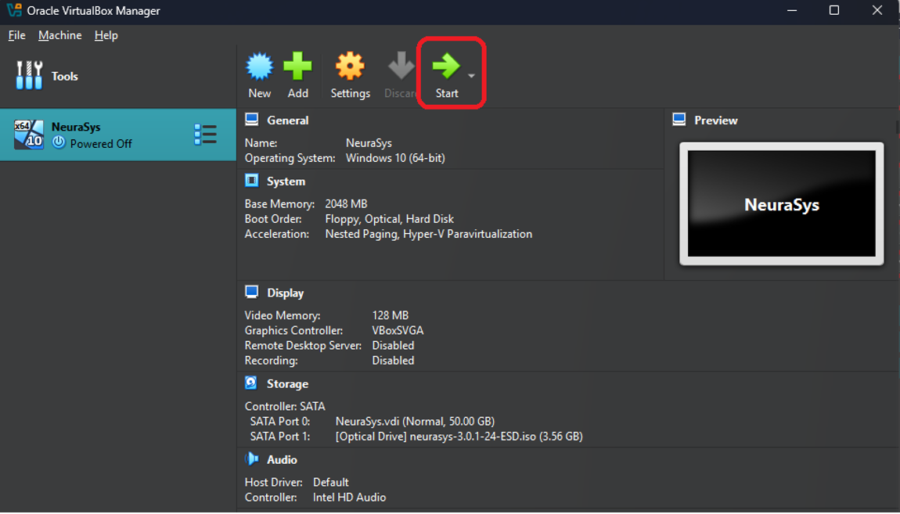
- 2. Lehetőség - Telepítés fizikai számítógépre
- Töltse le a RUFUS nevezetű alkalmazást.
- Nyissa meg, majd válassza ki a megfelelő pendrive-ot, ISO fájlt és a telepíteni kívánt számítógépnek megfelelő BIOS formátumot (MBR-t BIOS-nak, GPT-t UEFI-nek). Ezután nyomjon a "Start"-ra. 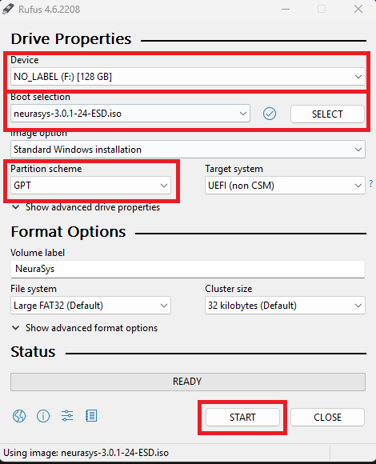
- A felugró ablakban szedje ki az összes pipát, majd nyomjon az "Ok"-ra. 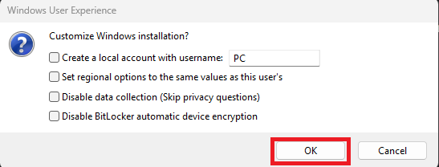
- A felugró ablakban válassza az "Ok" gombot. 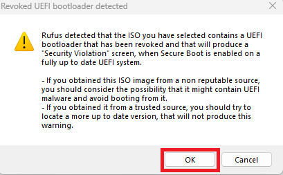
- A program készít egy bootolható USB Pendrive-ot, amit - sikeres áttöltés után - használhat a rendszer telepítéséhez.